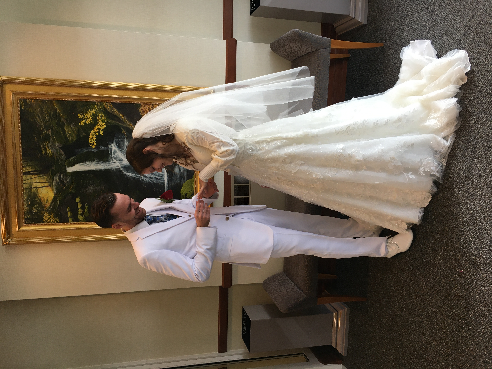

Lilly Anna ("Aw-naw") Jarvis
Hi! I'm a CSC major at OTC. I'm all about techie stuff, memes, my husband, OTC's STEM Club, and my pets. Seriously, my friends call me all the time when they run into computer or other electronic issues. It's funny how many problems are solved by turning something off and turning it back on again! Despite this I'm no expert and still have a ways to go in my field, even beyond college. I'm excited to learn all I can in this class!
Fun Facts
Fun Fact #1
One of my poems was published in a newspaper.

Fun Fact #2
I go ghost hunting whenever I get the chance.
Fun Fact #3
My favorite flowers are sunflowers.

Fun Fact #4
I'm on the STEM club counsil (You should join!).
Fun Fact #5
I've done ecology studies in Costa Rica.

Fun Fact #6
I walked across the Golden Gate Bridge in flip flops.
Recent Events
Just Got Married to the Most Amazing Guy!!
I met my husband Joshua Jarvis playing an apocolyptic rock game of D&D with mutual friends. I was a barbarian and he was a paladin. He just walked in and sat next to me with the dorkiest smile on his face and we couldn't stop talking the whole night. That Sunday, he asked me out on a date. I'm mortified about it to this day, but I said no without telling him why and walked off. It totally slipped my mind. I had been planning on serving a mission trip at the time and would be leaving in 6 months, so it felt like it wouldn't have been fair to him if he really liked me. Well as you can tell, that didn't end up happening and we kept hanging out and dating not dating for a few months. What can I say? He was irresistable. Eventually I decided to officially ask him out and serve here in town instead of leaving abroad. He jokes about it being perfect timing too. He'd gotten a summer internship out in Alaska in the Cook Inlet Beluga Whale Program and was literally leaving in 2 days. He loved it out there so much he might not have come back if I hadn't, and that would have really sucked for the both of us.
A few years later we got married on December 17th, 2022. Which was just one day after my finals and his graduation from the wildlife biology bachelor's program at MSU. It was definitely a crazy weekend I'll never forget! We drove up together that morning to the Saint Louis Temple for the Church of Jesus Christ of Latter Day Saints, and everything that could have conceiveibly gone wrong did. I was up the night before doing last minute store runs and so forgot to set my alarm. Miraculously I woke up only 30 minutes after I planned. 20 minutes out of Springfield, I realized I forgot my dress so we had to go back for it. Josh forgot his clothes as well but his parents were able to bring them up for him. We booked it to our small ceremony and made it 15 minutes before it started. I didn't have time to do anything but throw my hair up, change, and slap on some mascara, but thankfully everything somehow worked out great! Afterwards, we took pictures as fast as we humanly could outside in the freezing snow and ate at The Old Spaghetti Factory downtown with our families. We haven't had a reception yet, but we plan on holding one sometime in the spring or summer next year!